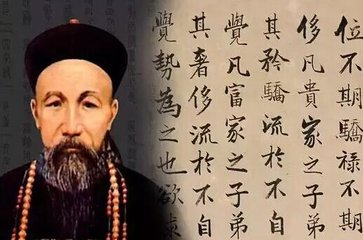

曾国藩
曾国藩 - 晚清四大名臣之一
曾国藩(1811年11月26日-1872年3月12日)，汉族，初名子城，字伯涵，号涤生，宗圣曾子七十世孙。中国近代政治家、战略家、理学家、文学家，湘军的创立者和统帅。与胡林翼并称曾胡，与李鸿章、左宗棠、张之洞并称"晚清四大名臣"。官至两江总督、直隶总督、武英殿大学士，封一等毅勇侯，谥曰文正。
曾国藩出生于晚清一个地主家庭，自幼勤奋好学，6岁入塾读书。8岁能读四书、诵五经，14岁能读《周礼》《史记》文选。道光十八年(1838)中进士，入翰林院，为军机大臣穆彰阿门生。累迁内阁学士，礼部侍郎，署兵、工、刑、吏部侍郎。与大学士倭仁、徽宁道何桂珍等为密友，以"实学"相砥砺。太平天国运动时，曾国藩组建湘军，力挽狂澜，经过多年鏖战后攻灭太平天国。
曾国藩一生奉行为政以耐烦为第一要义，主张凡事要勤俭廉劳，不可为官自傲。他修身律己，以德求官，礼治为先，以忠谋政，在官场上获得了巨大的成功。曾国藩的崛起，对清王朝的政治、军事、文化、经济等方面都产生了深远的影响。在曾国藩的倡议下，建造了中国第一艘轮船，建立了第一所兵工学堂，印刷翻译了第一批西方书籍，安排了第一批赴美留学生。曾国藩是中国近代化建设的开拓者。
人物生平
早年经历
1811年（嘉庆十六年），曾国藩出生于湖南长沙府湘乡荷叶塘白杨坪（今湖南省娄底市双峰县荷叶镇大坪村）的一个普通耕读家庭。兄妹九人，曾国藩为长子。祖辈以务农为主，生活较为宽裕。祖父曾玉屏虽少文化，但阅历丰富；父亲曾麟书身为塾师秀才，作为长子长孙的曾国藩，自然得到二位先辈的伦理教育了。曾国藩五岁启蒙，六岁入家塾“利见斋”。1826年（道光六年）春，应长沙府童子试，名列第七名。道光十年（1830年），前往衡阳唐氏宗祠读书，一年后转入湘乡涟滨书院。
1832年（道光十二年），曾国藩考取了秀才，并与欧阳沧溟之女成婚。连考两次会试不中，随后又努力复习一年。
1834年（道光十四年），曾国藩进入长沙著名的岳麓书院演习，同年参加湖南乡试，中试第三十六名举人，并动身入北京准备来年的会试。
1835年（道光十五年），曾国藩会试未中，寓居北京长沙会馆读书。次年恩科会试再次落第，于是返回长沙，于同乡刘蓉、郭嵩焘等居于湘乡会馆。
步入仕途
1838年（道光十八年），曾国藩再次参加会试，终于中试，殿试位列三甲第四十二名，赐同进士出身，自此，他一步一步地踏上仕途之路，并成为军机大臣穆彰阿的得意门生。朝考列一等第三名，道光帝亲拔为第二，选为翰林院庶吉士。
1840年（道光二十年），散馆考试，名列二等十九名，授翰林院检讨。1843年（道光二十三年）4月，升任翰林院侍讲。七月，钦命为乡试（四川）正考官。8月，补授翰林院侍讲。12月，充文渊阁校理。
1845年（道光二十五年），升侍讲学士。不久，同榜进士李文安之子李鸿章入京会试，投其门下受业，住他北京家至少一年。
1847年（道光二十七年），升任内阁学士加礼部侍郎衔。1849年（道光二十九年），授礼部右侍郎。不久署兵部右侍郎。在京十多年间，曾国藩就是这样坚韧不拔地沿着这条仕途之道，步步升迁到二品官位。十年七迁，连跃十级。
组建湘军
1851年（咸丰元年）1月，洪秀全在广西桂平金田村组织起事。5月，曾国藩在刘蓉、罗泽南等人的推动下，上《敬陈圣德三端预防流弊疏》批评咸丰皇帝。咸丰帝没有读完，就愤怒地将奏折摔到了地上，立刻召见了军机大臣要定他的罪，若非祁寯藻、季芝昌等人苦苦为他求情，他很可能陷于不测之罪。曾国藩了解这一情况后，心里非常紧张，立刻对此次谏争之举上奏自责，从此再不敢对皇帝本人和朝廷的根本决策说长道短。
1852年（咸丰二年），曾国藩因母丧在家。这时太平天国运动已席卷半个中国，尽管清政府从全国各地调集大量八旗军、绿营官兵来对付太平军，可是这支腐朽的武装已不堪一战。因此，清政府屡次颁发奖励团练的命令，力图利用各地的地主武装来遏制太平军势力的发展，这就为曾国藩的湘军的出现，提供了一个机会。
1853年（咸丰三年），借着清政府急于寻求力量镇压太平天国的时机，他因势在其家乡湖南一带，依靠师徒、亲戚、好友等复杂的人际关系，建立了一支地方团练，称为湘勇。8月，曾国藩获准在衡州练兵，“凡枪炮刀锚之模式，帆樯桨橹之位置，无不躬自演试，殚竭思力”，并派人赴广东购买西洋火炮，筹建水师。
在团练湘勇期间，他严肃军纪，开辟新的军队，他先后将5000人的湘勇分为塔、罗、王、李等十营，先后将团练地点由长沙迁至湘潭，避免与长沙的绿营发生直接矛盾。[1]
镇压天国
1854年（咸丰四年）2月，湘军倾巢出动，曾国藩发表了《讨粤匪檄》。在这篇檄文里，他声称太平天国运动是“荼毒生灵”，“举中国数千年礼义人伦诗书典则，一旦扫地荡尽。此岂独我大清之奇变，乃开辟以来名教之奇变，我孔子、孟子之所痛哭于九泉”，接着号召“凡读书识字者，又乌可袖手安坐，不思一为之所也”，其站在了道德的制高点，故动员了当时广大的知识分子参与到对太平军的斗争当中，为日后的胜利打下了坚实的基础。
曾国藩命褚汝航为水师总统、塔齐布为陆军先锋，统率17000人，挥师北上。5月，在靖港水战中被太平军石祥贞部击败，投水自尽，被部下所救。七月二十五日，重整水陆各军后，出师攻陷岳州。10月14日取武昌。咸丰帝大喜过望，令曾国藩署理湖北巡抚。然而，大学士祁隽藻进言，称“曾国藩以侍郎在籍，犹匹夫耳，匹夫居闾里，一呼，蹶起从之者万余人，恐非国家福也。”咸丰帝收回成命，仅赏曾国藩兵部侍郎头衔。12月2日，曾国藩攻陷田家镇。
1855年（咸丰五年）2月12日夜，石达开总攻湘军水营，烧毁湘军战船100余艘。曾国藩座船被俘，“文卷册牍俱失”。曾国藩愤怒至极，打算策马赴敌以死，罗泽南、刘蓉力劝乃止。
1856年（咸丰六年），曾国藩坐困南昌。9月2日，洪秀全与杨秀清内讧，史称天京事变，南昌解围。10月，曾国藩在长募勇组建吉字营入援江西。
1857年（咸丰七年）2月20日，其父去世，曾国藩偕弟曾国华回籍奔丧。7月，两次上疏，请求在家终制，获咸丰帝准许。在当年建“思云馆”。
1858年（咸丰八年）5月19日，李续宾、杨岳斌率水陆两军攻陷九江。7月13日，曾国藩接咸丰谕出办浙江军务，于8月15日抵达南昌，与胡林翼会商进兵、筹饷之策。11月15日，李续宾、曾国华在三河之役战死。12月，曾国藩作《爱民歌》以训湘军。
1859年（咸丰九年）11月，曾国藩拟四路进兵之策，攻取安庆。
攻占南京
1861年（咸丰十一年）9月5日，湘军攻陷安庆。9月25日，曾国藩移住安庆。12月20日，曾国藩奉旨督办四省（苏、皖、浙、赣）军务，其巡抚、提镇以下悉归节制。同月，在安庆创办内军械所。年底，定三路军进军之策：“以围攻金陵属之国荃，而以浙事属左宗棠，苏事属李鸿章，于是东南肃清之局定矣。”
1862年（同治元年）1月31日，曾国藩奉旨任两江总督协办大学士，曾国荃补授浙江按察使。二月十四日，左宗棠率军由江西入浙江。四月，李鸿章率军抵上海。五月，曾国荃率军进驻雨花台，会同彭玉麟的水师围攻天京。六月，洪秀全命令各地太平军回援天京，太平军集结二十万人兵力，十月起大战湘军四十多天，未能取胜。
1864年（同治三年）7月，湘军破太平天国的天京（南京），对无辜平民展开屠杀与抢掠，当时的南京城被烧毁，平民死伤无数，南京人称曾国藩、曾国荃兄弟为“曾剃头”、“曾屠户”。7月，朝廷加曾国藩太子太保、一等侯爵。曾国荃赏太子少保、一等伯爵，此起曾与平定太平天国战功居次之湖广总督官文双方形成集团政争白热化。八月，奏准裁撤湘军25000人。
追剿捻军
1865年（同治四年）1月，选汉唐以来各臣奏疏17首，编《鸣原堂论文》。3月，主持修葺种山、尊经两书院。收养八百孤寒子弟，并从自己养廉银中捐款课奖。5月26日，曾国藩率军赴山东剿捻。6月，主持整理《王船山遣书》完稿，共320卷，交金陵书局出版。六月十八日，北上剿捻之策：重镇设防，划河圈围，清野查圩，马队追踪。9月，经杨州、清江浦抵徐州。一路调兵布防堵围，沿途又张榜招员。10月，将金陵制造局上迁海虹口，和李鸿章原设的炮局及购自美国人的铁厂合并，再加容闳购回的百多部机器建成江南制造总局。12月，核定长江水师永远章程及营制营规。
1866年（同治五年），曾国藩奉旨进驻周家口，以钦差大臣的重权身份，督师剿捻。曾国藩根据捻军行踪不定、流动作战的特点，采用了“重点防务、坚壁清野和画河圈围”的对策，但最终全部失败。后来，他在周口西至漯河建立起“沙河百里防线”，希望借此天堑消灭捻军。
主办洋务
1867年（同治六年）3月，在江南制造总局下设造船所试制船舰。同时拟设译书馆。5月，会同李鸿章将江南制造总局由虹口迁高昌庙，征地扩迁，规制大增。六月，补授体仁阁大学士。
1868年（同治七年）4月，奉上谕改授为武英殿大学士。5月31日，至上海视察江南制造成总局。8月，奉命调任直隶总督。9月，江南造船厂试制的第一艘轮船驶至江宁，曾登船试航，取名“恬吉”。12月，曾国藩抵达北京，拜见慈禧太后与同治皇帝。
天津教案
1868年（同治七年），曾国藩改任直隶总督。1870年（同治九年）6月21日，天津数千名群众因怀疑天主教堂以育婴堂为晃子拐骗人口、虐杀婴儿，群集在法国天主教堂前面。法国领事丰大业认为官方没有认真弹压，持枪在街上碰到天津知县刘杰，因发生争执开枪射击，当场击死刘杰仆人一人，民众激愤之下先杀死了法国驻天津领事丰大业及其秘书西门，之后又杀死了10名修女、2名神父、另外2名法国领事馆人员、2名法国侨民、3名俄国侨民和30多名中国信徒，焚毁了法国领事馆、望海楼天主堂以及当地英美传教士开办的4座基督教堂。事件发生后，英、美、法等国联合提出抗议，并出动军舰逞威。
正在直隶总督任上的曾国藩奉命前往天津办理天津教案。曾国藩十分惊恐，甚至出发前立下遗嘱，他深知当时中国远非西方列强对手，因此主张对外让步。
曾国藩到天津后，考量当时局势，没有与法国开战，“但冀和局之速成，不问情罪之一当否”，在法国的要求下，商议决定最后处死为首杀人的8人，充军流放25人，并将天津知府张光藻、知县刘杰被革职充军发配到黑龙江，赔偿外国人的损失46万两银，并由崇厚派使团至法国道歉。这个交涉结果，朝廷人士及民众舆论均甚为不满，使曾国藩的声誉大受影响，被称为“卖国贼”（京师湖广会馆将曾国藩匾落拔除烧毁就是因为此事）。
朝廷命其处理“天津教案”。曾国藩发布《谕天津士民》的告示，对天津人民多方指责，诫其勿再起事端，随后释放犯法教民和涉案拐犯，引起天津绅民的不满。处理“天津教案”，不少人骂他是卖国贼，全国舆论大哗，“自京师及各省皆斥为谬论，坚不肯信”。
回任两江
1870年（同治九年），两江总督马新贻被平民张汶祥刺杀于后，朝廷命曾国藩再任两江总督，前往南京审理该案。
1871年（同治十年）8月19日，挈李鸿章联衔会奏《拟选子第出洋学艺折》。九月，视察水陆各营防务、训练情况。十一月抵达上海。
1872年（同治十一年）2月27日，曾国藩领衔上奏，促请对“派遣留学生一事”尽快落实。并提出在美国设立“中国留学生事务所”，推荐陈兰彬、容闳为正副委员常驻美国管理。在上海设立幼童出洋肄业局，荐举刘翰清“总理沪局选送事宜”。3月1日，时发脚麻之症，舌蹇不能语。
3月20日，曾国藩午后在南京西花圃散步，突发脚麻，曾纪泽扶掖回书房，端坐三刻逝世。朝廷闻讯，辍朝三日。追赠太傅，谥文正，祀京师昭忠、贤良祠。6月25日，灵柩运抵长沙。7月19日，葬于长沙南门外之金盆岭。
1873年（同治十二年）12月13日，改葬于善化县（今望城区）湘西平塘伏龙山。与夫人欧阳氏合葬。
主要成就
政治
曾国藩作为近代著名的政治家，对“康乾盛世”后清王朝的腐败衰落，洞若观火，他说：“国贫不足患，惟民心涣散，则为患甚大。”对于“士大夫习于忧容苟安”，“昌为一种不白不黑、不痛不痒之风”，“痛恨次骨”。他认为，“吏治之坏，由于群幕，求吏才以剔幕弊，诚为探源之论”。基于此，曾国藩提出，“行政之要，首在得人”，危急之时需用德器兼备之人，要倡廉正之风，行礼治之仁政，反对暴政、扰民，对于那些贪赃枉法、渔民肥己的官吏，一定要予以严惩。至于关系国运民生的财政经济，曾国藩认为，理财之道，全在酌盈剂虚，脚踏实地，洁己奉公，“渐求整顿，不在于求取速效”。曾国藩将农业提到国家经济中基础性的战略地位，他认为，“民生以穑事为先，国计以丰年为瑞”。他要求“今日之州县，以重农为第一要务”。
受两次鸦片战争的冲击，曾国藩对中西邦交有自己的看法，一方面他十分痛恨西方人侵略中国，认为卧榻之旁，岂容他人鼾睡，并反对借师助剿，以借助外国为深愧”；另一方面又不盲目排外，主张向西方学习其先进的科学技术，如他说过购买外洋器物……访募覃思之士，智巧之匠，始而演习，继而试造，可以剿发捻，可以勤远略。
军事
曾国藩提倡忠君卫道、以儒家学说治军的这一宗旨还贯彻在选将、募兵、军队管理以及协调军内外关系等方面。曾国藩的军事思想内涵极丰，集显过人之处。他认为，兵不在多而在于精，“兵少而国强”，“兵愈多，则力愈弱；饷愈多，则国愈贫”。主张军政分理，扣负其责。他购买洋枪、洋炮、洋船，推进中国军队武器的近代。
曾国藩治军把选将作为第一要务，他说，“行军之道，择将为先。”他的选将标准是德才兼备，智勇双全，而把德放在首位，并把德的内涵概括为“忠义血性”。他提出，“带勇之人，该求我党血性男子，有忠义之气而兼娴韬钤之秘者，与之共谋。”又说“带勇之人，第一要才堪治民，第二要不怕死，第三要不计名利，第四要耐受辛苦。”“大抵有忠义血性，则相从以俱至，无忠义血性，则貌似四者，终不可恃。”曾国藩认为，“忠义血性”的将领主要应从既受封建礼教熏陶又少官场恶习的儒生士子中去选择。罗尔纲在《湘军兵制》中统计，凡姓名、籍贯、出身、职务可查的湘军将领179人中，儒生出身的104人，占58%。以如此众多的儒生为将，这在历代军事史上都是罕见的。
将清朝的世兵制改革为募兵制，也是曾国藩建立湘军的首要一着。他说，“数年来痛恨军营习气，武弁自守备以上无一人不丧尽天良。故决计不用营兵，不用镇将。”因此，他组建湘军时，主张不在市民而在乡农中招募兵员。其用意就是乡农中招募的兵员朴实壮健，有利于灌输封建的忠义伦理思想和便于适应艰苦残酷的战争环境。曾国藩还规定，“招募兵勇，须取具保结，造具府县、里居、父母、兄弟、妻子名姓、箕斗清册。各结附册，以便清查。”凡无保者，概不招募。曾国藩的这一做法，完全是承袭了明末抗倭名将戚继光的募兵思想。曾国藩对绿营的编制方面也进行了改弦更张。湘军的编制以营为基本作战单位，营以下设哨，哨以下陆师为队，水师为船，马队为棚。湘军之始，营以上不再设官，各营全辖于曾国藩一人。其后营数增多，才有统领和分统的称谓。曾国藩要求以将必亲选、兵必自找、层层节制的原则组建军队，自统领至兵勇都是逐级进行募选，改变了绿营中“兵与兵不相知，兵与将不相习”的弊病，但也明显暴露了建立私家军队的用心，并从此就开创了近代中国“兵为将有”的先例，军阀拥兵割据的局面也就初显端倪了。
曾国藩在治军方略上苦费心机，主张用儒家学说治军，即用封建伦理纲常去教育官兵，以仁礼忠信作为治军之本去陶冶官兵，他的目的就是要以此来维系军心，培植出一支完全绝对服从于自己的私家军队。所以他认为，“用兵者必先自治，而后制敌。”
曾国藩的军事思想好影响了几代人，且不说其同时代的湘、淮将领以曾国藩为楷模，就是其后的黄兴、蔡锷等资产阶级军事家对曾国藩治军方略也推崇备至，张之洞、袁世凯等在甲午战后采用西法编练新军时，还采纳了曾国藩治军的许多做法。民国军事家蒋方震在他的《国防论》中赞赏曾国藩是近代史上“一个军事天才家”，还说凡领军者都应该效法曾国藩。蒋介石则明确表示要师承曾国藩，要求国民党军队中的将领必须“认清历史，效法曾胡”。曾国藩治军最重视精神教育，毛泽东一生很注意这点，曾国藩的“爱民为治兵第一要义”，毛泽东建立红军之初便制定了《三大纪律，八项注意》。
文学
曾国藩继承桐城派方苞、姚鼐而自立风格，创立晚清古文的“湘乡派”，乃湖湘文化的重要代表。他论古文，讲求声调铿锵，以包蕴不尽为能事；所为古文，深宏骏迈，能运以汉赋气象，故有一种雄奇瑰玮的意境，能一振桐城派枯淡之弊，为后世所赞。曾氏宗法桐城，但有所变革、发展，又选编了一部《经史百家杂钞》以作为文的典范，非桐城所可囿，世称为湘乡派。清末及民初严复、林纾，以至谭嗣同、梁启超等均受他文风影响。所著有《求阙斋文集》、《诗集》、《读书录》、《日记》、《奏议》、《家书》、《家训》及《经史百家杂钞》、《十八家诗钞》等。不下百数十卷，名曰《曾文正公全集》，传于世。另著有《为学之道》、《五箴》等著作。
思想学术
曾国藩一生奉行程朱理学，但对于程朱之学并未盲目崇拜，事实上，他对于宋明儒学其他支派的思想亦多所汲取。宋明理学实际上分为气学、理学和心学三个学术派别。
曾国藩在政治实践和军事斗争中也渐渐地看到了程朱理学“指示之语，或失于隘”、或“病于琐”、或“偏于静”的局限。在这种情形下，曾国藩对心学表现出了宽容的学术姿态。对于程朱理学与陆王心学之学术争辩，他认为对于两家之争应取其同，避其异，扬其长，兼收并蓄，扬长避短，推进儒学的发展。
曾国藩还以气学在生成论方面的资源来弥补理学之局限，谓“张子之《正蒙》，醇厚正大，邈焉寡俦”。依着气学的思路，曾国藩认为，天地万物均因禀气而生，气是构成天地万物的最终基元。在禀气而生这个意义上，天地万物是“同体”的。
不过，曾国藩同时认为，虽太和絪緼之气流行不止，天地万物最初所得之气“均耳”，但人与物、圣人与常人实所禀有之气并不相同。就人与物相对而言，人得气之全，物却仅得气之偏；故人有知性，而物仅得物性。就人类而言，圣人所禀之气清且厚，常人所禀之气却浊而薄。
处世交友
曾国藩对交友之道颇有见地，他认为交友贵雅量，要“推诚守正，委曲含宏，而无私意猜疑之弊”。“凡事不可占人半点便宜。不可轻取人财”。要集思广益，兼听而不失聪。“处世方面，曾国藩认为，“处此乱世，愈穷愈好”。身居高官，“总以钱少产薄为妙”。“居官以耐烦为第一要义”，“德以满而损，福以骄而减矣”。为人须在一“淡”字上着意，“不特富贵功名及身家之顺逆，子姓之旺否悉由天定，即学问德行之成立与否，亦大半关乎天事，一概笑而忘之”。“功不必自己出，名不必自己成”，“功成身退，愈急愈好”。
曾国藩写有格言十二首，基本上概括了他的处世交友之道。[2]
治家方略
曾国藩认为最重要的就是要在家庭成员中人人孝悌的原则。孝容易理解，就是对父母、对长辈的感恩、尊敬与赡养。悌是指兄弟之间和睦友爱，也就是同辈之间的融洽与和谐。在曾国藩家书里，一般都以为他给孩子写的信最多，事实上他写给弟弟的信才是最多的，可见他对兄弟之间关系的重视。曾国藩有段著名的评论，说家庭兴旺的规律是：天下官宦之家，一般只传一代就萧条了，因为大多是纨绔子弟；商贾之家，也就是民营企业家的家庭，一般可传三代；耕读之家，也就是以治农与读书为根本的家庭，一般可兴旺五、六代；而孝友之家，就是讲究孝悌的、以和治家的家庭，往往可以绵延十代八代。[3]
曾国藩在“和以治家”的宗旨下还特别强调“勤以持家”。这个勤以持家在曾国藩那有两层意思，一是家庭成员要克勤克俭，一是做家长的要勤以言传身教。曾国藩说的这些，他自己就能一丝不苟地带头去做，而且做得非常好。比如大儿子曾纪泽喜欢西方社会学，曾纪鸿喜欢数学和物理学，曾国藩虽然一窍不通，也能尽自己所能去了解，去努力学一点。这样的父亲，才不愧是一个真正“勤以持家”的父亲。在曾国藩的影响下，曾纪泽总是会亲自教孩子们学英语、数学、音乐，还教他们练书法、写诗文、讲解经史典章，不论再忙，每日总要抽出时间来陪孩子、陪家人，这就是最好的家庭教育。所以，曾国藩子孙、曾孙，甚至玄孙里，有很多科学家、教育家和社会活动家。
书法
曾国藩在书法上的突出成就一直为他历史上的重大影响所掩盖。曾国藩对于书法理论的阐述见其《日记》、《家书》及一此文章中。他首先对当时阮元抛出的南北书派论有独到的认识，他既赞成又提出批评，主张南北兼而有之。他对书法的本源，提出乾坤大源之说。从乾道——阳刚美——着力——雄奇——大气，从坤道——阴柔美——不着力——淡远——韵胜，形成了他一个系统的书法理论观。曾国藩一生勤勉于书法创作，走过了一条由泛而专，由继承古典到创新时尚的曲折探索道路。他留下了近130万字的《日记》是中国古代罕见的一部巨型书法作品。他的楷书劲健刚拔，竖起了一面承唐继宋明而刚柔相济的正书旗帜。他的行书劲健遒俊而华美。他的小楷与小行书是整个清代的典范。他应是与同代包世臣、何绍基齐名的大书家。
人格修炼
人格修炼对他事业有帮助。
首先是诚，为人表里一致，一切都可以公之于世。
第二个是敬，敬畏，内心不存邪念，持身端庄严肃有威仪。
第三个就是静，心、气、神、体都要处于安宁放松的状态。
第四个字是谨，不说大话、假话、空话，实实在在，有一是一有二是二。
第五个字是恒，生活有规律、饮食有节、起居有常。最高境界是“慎独”，举头三尺有神明。
他每天记日记，对每天言行进行检查、反思，一直贯穿到他的后半生，不断给自己提出更多要求：要勤俭、要谦对、要仁恕、要诚信，知命、惜福等，力图将自己打造成当时的圣贤。许多人都认为人格修炼是空虚的东西，认为修身是虚无缥缈的东西，甚至还是迂腐的，但曾国藩一生的事业，修身才是他事业成功最重要的原因。
曾国藩认为：“养生之法约有五事：一曰眠食有恒，二曰惩忿，三曰节欲，四曰每夜临睡前洗脚，五曰每日两饭后各行三千步。”养生之道，“视”、“息”、“眠”、“食”四字最为要紧，养病须知调卫之道。
早年修身十三条
一、主敬（整齐严肃，无时不惧。无事时，心在腔子里；应事时，专一不杂。）
二、静坐（每日不拘何时，静坐片刻，来复仁心，正位凝命，如鼎之镇。）
三、早起（黎明即起，醒后勿沾恋。）
四、读书不二（一书未点完，断不看他书。东翻西阅，都是徇外为人。）
五、读史（每日圈点十页，虽有事不间断。）
六、谨言（刻刻留心。）
七、养气（气藏丹田，无不可对人言之事。）
八、保身（节欲、节劳、节饮食。）
九、写日记（须端楷，凡日间身过、心过、口过，皆一一记出，终身不间断。）
十、日知所亡（每日记茶余偶谈一则，分德行门、学问门、经济门、艺术门。）
十一、月无忘所能（每月作诗文数首，以验积理的多寡，养气之盛否。）
十二、作字（早饭后作字。凡笔墨应酬，当作自己功课。）
十三、夜不出门（旷功疲神，切戒切戒。）
历史评价
《清史稿》：国藩为人威重，美须髯，目三角有棱。每对客，注视移时不语，见者竦然，退则记其优劣，无或爽者。天性好文，治之终身不厌，有家法而不囿于一师。其论学兼综汉、宋，以谓先王治世之道，经纬万端，一贯之以礼。惜秦蕙田五礼通考阙食货，乃辑补盐课、海运、钱法、河堤为六卷；又慨古礼残阙无军礼，军礼要自有专篇，如戚敬元所纪者。论者谓国藩所订营制、营规，其于军礼庶几近之。晚年颇以清静化民，俸入悉以养士。老儒宿学，群归依之。尤知人，善任使，所成就荐拔者，不可胜数。一见辄品目其材，悉当。时举先世耕读之训，教诫其家。遇将卒僚吏若子弟然，故虽严惮之，而乐为之用。居江南久，功德最盛。
国藩事功本于学问，善以礼运。公诚之心，尤足格众。其治军行政，务求蹈实。凡规画天下事，久无验，世皆称之，至谓汉之诸葛亮、唐之裴度、明之王守仁，殆无以过，何其盛欤！国藩又尝取古今圣哲三十三人，画像赞记，以为师资，其平生志学大端，具见于此。至功成名立，汲汲以荐举人才为己任，疆臣阃帅，几遍海内。以人事君，皆能不负所知。呜呼！中兴以来，一人而已。
胡林翼：曾公素有知人之鉴，所识拔多贤将。
李瀚章：其深识远略，公而忘私，尤有古人所不能及者。
石达开：虽不以善战名，而能识拔贤将，规划精严，无间可寻，大帅如此，实起事以来所未见也。
薛福成：自昔多事之秋，无不以贤才之众寡，判功效之广狭。曾国藩知人之鉴，超佚古今，或邂逅于风尘之中，一见以为伟器；或物色于形迹之表，确然许为异材。平日持议，常谓天下至大，事变至殷，绝非一手一足之所能维持。故其振拔幽滞，宏奖人杰，尤属不遗余力。尝闻曾国藩目送江忠源曰：“此人必名立天下，然当以节烈称。”后乃专疏保荐，以应求贤之诏。胡林翼以臬司统兵，隶曾国藩部下，即奏称其才胜己十倍。二人皆不次擢用，卓著忠勤。曾国藩经营军事，亦赖其助。其在籍办团之始，若塔齐布、罗泽南、李续宾、李续宜、王鑫、杨岳斌、彭玉麟，或聘自诸生，或拔自陇亩，或招自营伍，均以至诚相与，俾获各尽所长。
左宗棠：谋国之忠，知人之明，自愧不如元辅；同心若金，攻错若石，相期无负平生。
李鸿章：师事近三十年，薪尽火传，筑室忝为门生长；威名震九万里，内安外攘，旷世难逢天下才。
朱孔彰：中兴景运，群公辈出，十年之间，削平大难，非天生圣相而振兴之，乌能若是邪？然履危濒死屡矣，有百折不挠之志，宏济艰难，虽曰成功者天，抑亦人谋也。赵衰之言曰：“说礼乐，熟诗书，为元帅。”孙叔豹之言曰：“太上立德，次立功，次立言，谓为三不朽。”公独兼之。至天津之役，攘垢忍尤，以安邦国，老成至计，谋出万全，可谓至忠矣。
欧阳昱：予观文正一生，不善用兵而善用人，牛溲马勃，无不收纳。所以群才效用，大寇荡平，而为中兴第一功臣也。
梁启超：①岂惟近代，盖有史以来不一二睹之大人也已；岂惟中国，抑全世界不一二睹之大人也已。然而文正固非有超群绝伦之天才，在并时诸贤杰中，称最钝拙；其所遭值事会，亦终生在指逆之中；然乃立德、立功、立言三不朽，所成就震古烁今而莫与京者，其一生得力在立志自拔于流俗，而困而知，而勉而行，历百千艰阻而不挫屈，不求近效，铢积寸累，受之以虚，将之以勤，植之以刚，贞之以恒，帅之以诚，勇猛精进，坚苦卓绝。吾以为曾文正公今而犹壮年，中国必由其手获救。②吾谓曾文正集，不可不日三复也。
谭嗣同：历观近代名公，其初皆未必了了。更事既多，识力乃卓。如曾文正、惠敏父子，丁雨生中丞，洞彻洋务，皆由亲身阅历而得。左文襄晚达，故沈观最久。
杨昌济：宋韩、范并称，清曾、左并称，然韩、左办事之人，范、曾办事兼传教之人也。
王闿运：用将则胜，自将则败。
容闳：故其身虽逝，而名闻千古。其才大而谦，气宏而凝，而为清代第一流人物，亦称旧教之特产人物。
章太炎：曾国藩者，誉之则为圣贤、谳之则为元凶。
蔡锷：①曾、胡两公，中兴名臣之铮佼者，其人其事，距今仅半个世纪。②带兵如带子弟一语，最为慈仁贴切。能以此存心，则古今带兵格言，千言万语皆付之一炬。
蔡东藩：若曾、胡二公，文足安邦，武能御侮，清之不亡，赖有此耳。
毛泽东：①予于近人，独服曾文正。观其收拾洪、杨一役，完美无缺，使以今日易其位，其能如彼之完满乎？②曾国藩是地主阶级最厉害的人物。
蒋介石：①曾公乃国人精神之典范。②辛亥以前，曾阅曾文正全集一书，……民国二年失败以后，再将曾氏之书与胡左诸集，悉心讨究。
蒋廷黻：国藩以执两之道，贯经世之学，于社会之改造，则恢复民族固有美德，此之谓守旧；于民族之前途，则接受西洋文明，此之谓革新。二者同时进行，乃其对我国近代史之大贡献也。盖徒然恢复旧礼教，则不能抵抗帝国主义者之机械科学，何况旧礼教之本身，亦复百孔千疮，有待救正乎？若徒然接受新文化而不恢复固有之美德，则此腐化之旧官僚社会，根本不能举办事业，更何况社会民族之立场，有何术以全盘改造之乎？吾人之所以佩服曾国藩，诚以其眼光远大，订此救国救民之方案，与后日国父之民族主义如出一辙矣。
陈公笃：国藩素拘谨，其才不如胡左，而功倍之，独知人善用，是其特长。
胡哲敷：五百年来，能把学问在事业上表现出来的，只有两人：一为明朝的王守仁，一则清朝的曾国藩。
萧一山：国藩以严谨胜，宗棠以豪迈胜。
徐中约：曾国藩的政治家风度、品格及个人修养很少有人能予匹敌。他或许是十九世纪中国最受人敬仰、最伟大的学者型官员。